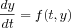
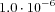
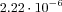
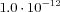

Deterministic (LSODA)
The default method in COPASI to calculate a time course is LSODA [
Petzold83]. LSODA is part of the
ODEPACK library [
Hindmarsh83]. LSODA was written by Linda R. Petzold and Alan C. Hindmarsh.It solves systems  with a dense or banded Jacobian when the problem is stiff, but it automatically selects between non-stiff (Adams) and stiff (BDF) methods. It uses the non-stiff method initially, and dynamically monitors data in order to decide which method to use.
Options for LSODA
- Integrate Reduced Model
- This parameter is a boolean value to determine whether the integration shall be performed using the mass conservation laws, i.e., reducing the number of system variables or to use the complete model. A value of '1' (the default) instructs COPASI to make use of the mass conservation laws, whereas a value of '0' instructs COPASI to determine all variables through ODEs.
- Relative Tolerance
- This parameter is a numeric value specifying the desired relative tolerance the user wants to achieve. A smaller value means that the trajectory is calculated more accurate. The default value is . Please note that best achievable relative tolerance is approximately .
- Absolute Tolerance
- This parameter is a positive numeric value specifying the desired absolute tolerance the user wants to achieve. Please note that for species the absolute tolerance is applied to the concentration value. The default value is .
- Adams Max Order
- This parameter is a positive integer value specifying the maximal order the non-stiff Adams integration method shall attempt before switching to the stiff BDF method. The default and maximal order is '12'.
- BDF Max Order
- This parameter is a positive integer value specifying the maximal order the stiff BDF integration method shall attempt before switching to smaller internal step sizes. The default and maximal order is '5'.
- Max Internal Steps
- This parameter is a positive integer value specifying the maximal number of internal steps the integrator is allowed to take before the next desired reporting time. The default value is '10000'.